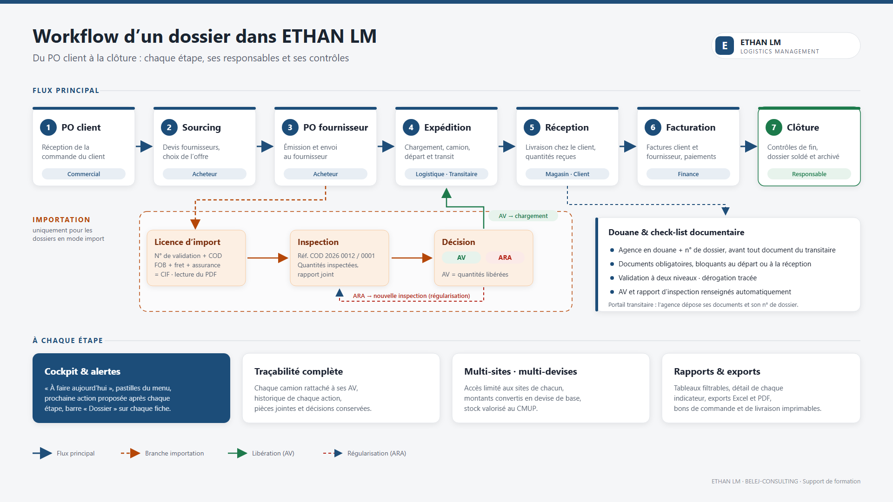

Guide de formation des utilisateurs : les étapes, les responsables, les contrôles et les bons réflexes dans ETHAN LM.

Dans ETHAN LM, tout part d’un dossier : le PO client (la commande reçue du client). Chaque dossier suit le même parcours en sept étapes. Pour les marchandises importées, une branche importation s’ajoute entre le PO fournisseur et l’expédition.
Le flux principal (bleu), la branche importation (orange), la libération par AV (vert) et la régularisation d’un ARA (rouge).
| # | Étape | Responsable | Ce qui doit être fait |
|---|---|---|---|
| 1 | PO client | Commercial | Enregistrer la commande du client : lignes, quantités, prix, devise, mode (achat local, import, stock). |
| 2 | Sourcing | Acheteur | Saisir les devis des fournisseurs et retenir la meilleure offre. |
| 3 | PO fournisseur | Acheteur | Émettre le bon de commande fournisseur, puis l’envoyer. |
| 4 | Expédition | Logistique · Transitaire | Créer l’expédition (camion, quantités), désigner l’agence en douane, compléter les documents. |
| 5 | Réception | Magasin · Client | Confirmer la livraison et les quantités reçues. |
| 6 | Facturation | Finance | Enregistrer les factures client et fournisseur, puis les paiements. |
| 7 | Clôture | Responsable | Vérifier les contrôles de fin et clôturer le dossier. |
Point de départ du dossier. Le mode d’exécution choisi ici décide de la suite : import active la branche licence / inspection.
Où : menu PO clients → Nouveau PO client.
Où : fiche du PO client, onglet Achats.
Où : fiche du PO client → onglet Achats ; ou menu PO fournisseurs.
Transport).Où : fiche du PO fournisseur → Nouvelle expédition ; suivi dans le menu Livraisons.
Où : fiche du PO client, onglet Finance ; menu Factures & paiements.
Clôture : livraisons complètes, factures soldées, documents en règle.Pour un dossier en mode import, la marchandise ne peut pas être chargée tant qu’elle n’a pas été autorisée (licence) puis libérée (AV). Trois étapes s’intercalent entre le PO fournisseur et l’expédition.
| Décision | Signification | Ce qu’il faut faire |
|---|---|---|
| AV | Attestation de vérification : les quantités conformes sont libérées. | Créer l’expédition : les quantités chargées sont imputées sur l’AV (au plus ancien d’abord, modifiable). |
| ARA | Attestation de refus : la marchandise ne peut pas partir en l’état. | Régulariser : nouvelle inspection rattachée à l’ARA, jusqu’à obtenir une AV. |
Licences d’import.Chaque dossier et chaque expédition ont une check-list de documents calculée selon des règles (mode, famille d’articles, transport). Certains documents sont bloquants : tant qu’ils ne sont pas validés, l’étape suivante (départ, réception, facturation, clôture) est impossible.
| Statut | Signification |
|---|---|
| À fournir | Attendu, pas encore déposé. |
| À valider | Déposé (fichier, n°, date d’émission), en attente de contrôle. |
| Validé | Contrôlé à deux niveaux. Attention à la date d’expiration éventuelle. |
| Rejeté | À redéposer, avec le motif du rejet. |
| Dérogé / non applicable | Décision tracée (motif obligatoire) : le document ne bloque plus. |
Agences en douane (agrément, contacts, postes desservis).| Bloc | À quoi il sert |
|---|---|
| À faire aujourd’hui | Les actions classées par urgence (rouge, orange, bleu). Replié par défaut ; cliquez pour l’ouvrir. |
| Tuiles | PO clients, PO fournisseurs, licences, livraisons : chiffres clés et montants en devise de base. |
| Graphiques | Livraisons sur six mois, engagement par fournisseur, consommation des licences. |
| Pipeline | Combien de dossiers à chaque étape : on voit où ça bloque. |
| Listes | Livraisons en cours, licences (échéance et consommation), activité récente. |
Une pastille par rubrique indique le nombre d’objets à traiter. Sa couleur est celle de l’action la plus urgente :
| Couleur | Signification | Exemples |
|---|---|---|
| Rouge | Urgent | PO client en retard, facture échue, ARA, document rejeté, licence expirant sous 7 jours |
| Orange | À traiter | Documents manquants ou à valider, licence expirant sous 30 jours, agence non désignée |
| Bleu | À suivre | PO à envoyer, licence à saisir, dossier à sourcer ou à clôturer |
Survolez la pastille pour voir les actions ; cliquez dessus pour ouvrir la liste détaillée.
| Terme | Définition |
|---|---|
| PO client | Commande reçue du client ; elle ouvre le dossier. |
| PO fournisseur | Bon de commande émis vers le fournisseur. |
| Licence | Autorisation d’importation ; son n° est le « N° de validation ». |
| COD | Référence de la licence (ex. COD 2026 0012) ; sert de base aux références d’inspection. |
| FOB / CIF | Valeur de la marchandise départ ; CIF = FOB + fret + assurance (+ autres frais). |
| AV | Attestation de vérification : libère les quantités conformes. |
| ARA | Attestation de refus : nécessite une régularisation. |
| Agence en douane | Transitaire qui déclare l’expédition ; elle a son propre n° de dossier. |
| Document bloquant | Document obligatoire qui empêche une étape tant qu’il n’est pas validé ou dérogé. |
| CMUP | Coût moyen unitaire pondéré : méthode de valorisation du stock, en devise de base. |
Faire avancer un dossier d’import complet sur l’environnement de test :